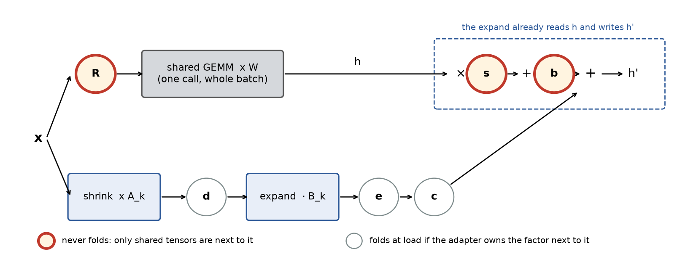
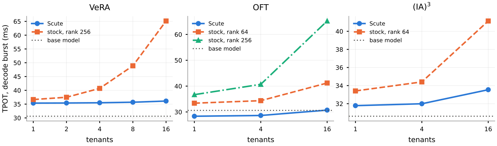
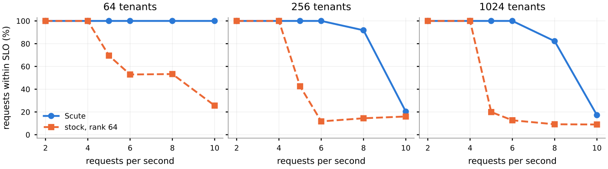

Contents · 9 sections
1What problem is it solving?2The big picture: six extra slots in the LoRA computation3Which slots can be merged at load?4Where is the cheapest place to compute the remaining slots?5How does Scute plug into vLLM?6Does it actually work better?7Limitations as I see them8How a recommendation or search team could try it9VerdictSHARE
Teams that serve many fine-tuned adapters on one base model should read this. The paper shows that vLLM's existing batched LoRA kernel, with a few changes, can run adapters trained with DoRA, (IA)³, VeRA and OFT (a method that multiplies each layer's input by a rotation matrix) exactly, in the same batch as LoRA adapters, without first converting them to LoRA. The core idea is to write all of these methods as one formula: the LoRA computation gets six extra slots, and each adapter puts its own vectors or matrices into them. A slot next to the adapter's own weights is merged into them at load; the rest are computed at every step, wherever they move the fewest bytes. The authors package this as Scute, a patch on top of vLLM.
On one RTX A6000, under a burst of requests, a mix of four or five methods takes only 5% (without VeRA) to 17% (all five) more decode time than the same number of plain LoRA adapters. With 64 to 1024 (IA)³ and VeRA adapters on the same GPU, the request rate it sustains is 1.5 times to at least 2.5 times that of their LoRA conversions. This means exact serving itself costs little extra time, while keeping adapters at their own size frees memory for more tenants.
What problem is it solving?
Multi-tenant serving usually keeps one copy of the base model on a GPU and attaches a small adapter for each customer, or tenant. Punica and S-LoRA let requests for different LoRA adapters share one batched computation, and vLLM and SGLang follow that design. But they only accept LoRA. Adapters from other parameter-efficient fine-tuning methods are rejected at load.
These methods change different things. DoRA rescales each output column to a learned length. (IA)³ multiplies the keys, the values and the FFN intermediate activation by learned vectors. VeRA makes all adapters share one frozen pair of random matrices, and each adapter learns only two small vectors per layer. OFT multiplies each layer's input by a block-diagonal rotation matrix.
Here is an illustrative scenario that runs through the article. A platform has four tenants, each with a different method:
| Tenant (illustrative) | Method | Parameters it owns | Cost of converting to LoRA |
|---|---|---|---|
| A | LoRA, rank 16 | two low-rank matrices | no conversion needed |
| B | DoRA | two low-rank matrices plus one length per column | the paper finds almost no accuracy loss |
| C | (IA)³ | a few vectors per layer, a few MB in total | up to 23.2 points lost without the tenant's data |
| D | VeRA | two vectors per layer | 0.34 GB as a rank-64 LoRA |
Both costs of conversion show up in the table. (IA)³ and OFT change the base weight by a full-rank matrix, so a rank-64 LoRA can only approximate them. VeRA starts as a few vectors, but as LoRA each tenant needs its own pair of large matrices, which takes GPU memory away from other tenants and from the KV cache. The other option is to merge each tenant into its own full copy of the model, which is exact, but then requests for different tenants can no longer share a batch.
The big picture: six extra slots in the LoRA computation
First, how batched LoRA serving works. A batch holds tokens from many adapters, and each layer has one shared base weight . The kernel computes once for the whole batch, then does two small steps per adapter segment: the shrink multiplies the input by down to rank dimensions, and the expand multiplies by , adds the result to and writes it out.

The paper's first contribution is to mark the places in this computation where an adapter can put its own parameters. The paper calls them slots. A slot holds one of the adapter's own vectors, scalars or matrices, and multiplies or adds it at one step of the computation. An unused slot holds the identity (a one, a vector of ones, a zero or the identity matrix). As a formula:
The base path has three slots: rotates the input before (OFT), multiplies each output column by a factor (DoRA, (IA)³), and adds a shift to the output. Each low-rank term also has three: sits between and , multiplies after , and is a scalar (VeRA's two vectors are and ). The paper calls this formula the normal form.
(IA)³ is a good example of how a method fits. It multiplies the FFN intermediate activation by a vector . Element-wise products can be reordered, so multiplying by first and then by the gate gives the same result. That makes the slot of the up projection.
Which slots can be merged at load?
More slots means more work at every step. The paper's second contribution is a rule: a slot next to a matrix or vector the adapter owns can be merged into it at load; a slot whose neighbours are all shared must be computed at every step. Shared tensors include the base and also matrices that all tenants share, like VeRA's. The rule holds when the adapter's total rank is low, and the paper gives the exact conditions. Hoot says

The three frames are DoRA's e, VeRA's d and e, and DoRA's s; the decision depends only on who owns the matrix next to the slot. Source: paper §3 fold rule and its DoRA and VeRA analysis (DoRA's e folds into B and c into A; VeRA shares rank 256 A and B; on 60 DoRA matrices the rank-16 residual is at least 59.7%).
A slot that merges: . If belongs to this adapter, multiplying into once at load removes the slot from serving. DoRA works this way. It rescales each column of to a learned length, so the base path multiplies by the slot and the low-rank path multiplies by the same factor in ; merges into its own , and the scalar into its own .
A slot that does not merge: , and sit next to nothing but the that all tenants share. Merging would change , which means copying the base weight for this tenant. Could a small low-rank term absorb what does? The authors take four public DoRA fine-tunes of Llama-3.1-8B, three layers each and five projections per layer, 60 matrices in all. is close to one, with a root-mean-square deviation of only 0.2%, yet has full rank in every case, and even the best rank-16 approximation misses at least 59.7% of the matrix's sum of squared entries. So a batched engine has to keep DoRA's and compute it at every step.
VeRA is the reverse of DoRA: for DoRA, keeping a slot live is a cost the engine cannot avoid; for VeRA, keeping the slots live is the saving. The and next to its and are shared by all VeRA tenants, so they cannot merge; forcing a merge would give each tenant its own rank-256 pair, which is the same as converting to a rank-256 LoRA. For VeRA, keeping the slots live is exactly what saves memory: all VeRA tenants share one copy of the matrices.
Where is the cheapest place to compute the remaining slots?
Adapter work does very little arithmetic per byte it moves, so its time is set by memory bandwidth, and the paper measures cost in bytes read and written. For the slots that must be computed live, the paper gives three routes, that is, at which step of the existing pipeline and with which kernel each one is computed.
DoRA's and (IA)³'s is applied inside the expand. The expand already reads the output tile by tile, adds the low-rank update and writes it back, and each tile belongs to one adapter. Scute multiplies the base output there by that adapter's and then adds the low-rank update (DoRA's factor on the low-rank path is already merged into ), which adds only one read of . In vLLM's kernel this is a one-line change, tiled_c += tiled_out * s. An open vLLM pull request for DoRA instead copies to every row and multiplies the output in a separate kernel after the expand. That separate pass costs 2.38 to 2.95 times the LoRA expand, close to the 3 times the byte count predicts; inside the expand, at 1024 tokens or more, it costs 0.985 to 1.022 times. End to end, in a decode test where requests arrive at once, four DoRA tenants take 1.002 times the time per token of four LoRA tenants.
VeRA's shared matrices are multiplied for the whole batch at once. VeRA has no low-rank matrices of its own, and vLLM's loader requires every adapter to have a term, so it gets an all-zero rank-1 term as a placeholder that adds no low-rank update. The segmented expand handles one adapter at a time and reads for each segment, so 16 VeRA tenants read it 16 times. Scute instead runs two GEMMs after the expand: first for every row of the batch, multiplied by the of that row's tenant; then a multiply by , with each row scaled by its as each tile finishes, added to the output; rows that do not belong to a VeRA tenant are skipped. The shared matrices are read once per step, however many VeRA tenants the batch holds.
OFT's rotation runs in its own pass before the shared GEMM. acts on the input, and the expand comes after the GEMM, so the expand cannot carry it. Scute adds a kernel before the GEMM that multiplies each input row by its tenant's block-diagonal matrix. The rotated rows still go through the same shared GEMM together, so OFT tenants still share the base weight with everyone else.
For Llama-3.1-8B (fp16, counting every adapted projection of all 32 layers) with 16 tenants in the batch, the paper counts the bytes the adapter part of each decode step reads; the base weight, which every request reads anyway, is not counted:
| Method | Route | Exact | GB read per step | ms at copy bandwidth |
|---|---|---|---|---|
| LoRA rank 16 | expand | yes | 1.34 | 1.97 |
| VeRA | shared matrices, whole batch | yes | 1.19 | 1.75 |
| VeRA as LoRA rank 256 | expand | yes | 21.47 | 31.58 |
| VeRA as LoRA rank 64 | expand | no | 5.37 | 7.90 |
| OFT (blocks of 32) | own pass before GEMM | yes | 1.28 | 1.88 |
| OFT as LoRA rank 64 | expand | no | 5.37 | 7.90 |
| (IA)³ | in the expand | yes | 0.01 | 0.01 |
| (IA)³ as LoRA rank 64 | expand | no | 1.88 | 2.76 |
Every method reads fewer bytes on its route than its conversion. The VeRA row reads mostly the shared matrices, and that is still less than the rank-64 conversion; the paper finds the rank-64 VeRA conversion loses almost no accuracy on these tasks, so it is VeRA's real competitor. The milliseconds are just bytes divided by copy bandwidth: 1.34 GB at 680 GB/s is about 1.97 ms. From this the paper builds a time model with no fitted parameters: added time = extra bytes ÷ memory bandwidth + extra kernel launches × launch cost (0.96 microseconds on the A6000). The authors test it on OFT's input rotation and on four ways of applying DoRA's outside the expand: where the extra bytes outweigh the launch overhead, its median error on total time is 0.7% to 14.0%. This means counting bytes gives a first-order estimate of the cost before any benchmark.
How does Scute plug into vLLM?
Scute does not fork vLLM and has two parts. At load, a converter reads a Hugging Face PEFT library checkpoint, rewrites it in the formula above, and stores it under vLLM's own LoRA tensor names, vLLM's paging and scheduler stay unchanged, while the loader and adapter activation are extended by the run-time patch. LoRA and DoRA pass through unchanged; DoRA's is computed at load as the learned length divided by the norm of each column of , which needs the base weight in the engine's own sharded layout, so it is done at load; VeRA stores only its two vectors and a reference to the shared matrices; OFT's parameters become explicit blocks.
At run time, each adapted layer gets extra buffers for , , and , set to the identity by default. A layer's forward pass has four steps: the base GEMM (split into q, k and v when OFT is present, because each has its own rotation), vLLM's shrink, the expand with , and VeRA's whole-batch shared term. The new kernels are written in Triton and registered as custom PyTorch operators, so CUDA graphs and torch.compile stay on.
Does it actually work better?
The first question is whether it computes the right thing. Trained vectors are close to the identity, so a missed slot rarely changes greedy decoding. For this test the authors therefore draw the adapters' vectors away from the identity with random numbers, for example (IA)³'s is one plus 0.3 times standard normal noise, so that they clearly change the log-probabilities. Nine such adapters covering all five methods run in one batch, and their log-probabilities are compared with the PEFT library in float32. For each method the mean error is only 0.3% to 1.5% of how much the adapter itself changes the log-probabilities. The largest errors match the fp16 rounding error of a plain LoRA adapter, and the same holds with two-GPU tensor parallelism. Fifteen trained adapters (each of the five methods trained on GSM8K, BoolQ and a textual entailment dataset) served together stay within 0.4 points of the PEFT library on every task.
Next, how much accuracy does conversion to LoRA lose? The paper converts (IA)³ and OFT adapters to rank-64 LoRA in several ways: truncated SVD of the weight change, and activation-aware SVD (minimizing the output error on 128 sample inputs), with the samples taken either from the tenant's own task data or from generic text. The table shows the three rows that lose the most, as differences in points from the PEFT library:
| Adapter | Task | PEFT library accuracy | Scute difference | Truncated SVD difference | Activation-aware SVD (tenant data) difference | Activation-aware SVD (generic text) difference |
|---|---|---|---|---|---|---|
| (IA)³ | GSM8K | 59.8 | +0.4 | −18.6 | −0.8 | −19.6 |
| (IA)³ | MNLI | 90.2 | 0.0 | −23.2 | +0.5 | −16.9 |
| OFT | GSM8K | 63.0 | +0.2 | −5.6 | −1.2 | −4.6 |
With the tenant's own task data, conversion mostly holds up, within 1.2 points on all six adapters at rank 64; without it, fitting on generic text loses more than 3 points in 8 of 12 cases. A platform usually gets only the adapter file, not the training data, so the real risk of conversion sits in the columns without the tenant's data.
Then, what does each extra tenant cost? As the number of tenants grows from 1 to 16, VeRA converted to rank-256 LoRA goes from 36.7 ms to 65.1 ms per token, because each tenant brings its own large matrices to read; Scute goes only from 35.4 ms to 36.1 ms, because the shared matrices are read once per step.

A platform serves several methods at once, so the authors also mix them in one pool. With 20 tenants, four of each method, and both engines using the same base GEMM, Scute takes 1.17 times the decode time of plain LoRA. With VeRA converted at rank 256, the conversions take 1.65 times Scute's, and only 16 of the 20 tenants fit in memory; with the accuracy-preserving rank-64 VeRA conversion, all 20 stay resident and the gap shrinks to 1.12 times. In the 16-tenant pool without VeRA, Scute is only 5% slower than plain LoRA. The paper attributes the extra time to VeRA's shared term, OFT's input rotation and the vectors each step reads.
Much of the conversions' slowness comes from padding: vLLM runs every adapter at the largest rank in the pool, here 256, and also runs all-zero matrices on projections a tenant does not adapt. In the five-method pool, the conversions' bytes at their own ranks would take 13.0 ms per step; padding raises that to 31.6 ms, close to the measured 34.7 ms.
Finally, many tenants, where adapter size decides whether memory suffices. In a pool that is half (IA)³ and half VeRA, Scute on one A6000 can keep all 1024 tenants resident in GPU memory, while stock fits only 64 rank-64 conversions.
The authors set a latency target (first token within 1 s, then each token within 100 ms) and find the highest request rate at which 90% of requests meet it. Scute sustains 10, 8 and 6 requests per second at 64, 256 and 1024 tenants; stock sustains 4 in each case. In this experiment both engines keep a similar number of tenants resident (Scute is limited to 64, stock keeps 48). The difference is in swapping in. Scute's adapters are a few MB, so all 1024 fit in host memory and copy in quickly. Each stock conversion is 0.34 GB, 256 more sit in host memory, and the rest load from storage. The cap of 64 resident tenants is a test setting that makes both engines swap; in deployment Scute could keep all 1024 resident. So keeping adapters at their own size directly sets the cost of swapping them in.

Limitations as I see them
First, the cost is higher on the A100, which shows the gain depends on how much memory is spare. With 80 GB, stock keeps every conversion resident; Scute still decodes faster, but in the mixed pools it takes 1.07 to 1.89 times the time of plain LoRA, and under prefill-heavy load stock's mean time to first token is as low as 0.76 times Scute's. With spare memory, stock rarely has to swap, and the capacity advantage with many tenants also narrows: at 256 tenants both engines sustain 8 requests per second.
Second, the evaluation is narrow. Every measurement uses Llama-3.1-8B, serving costs use synthetic tenants with the shapes of real adapters, and accuracy covers 15 adapters on three tasks. On multiple GPUs, the paper checks end-to-end correctness and some latency only with two-GPU tensor parallelism; DoRA's was also checked separately when split across 2, 4 and 8 GPUs.
Third, the methods covered have limits. HiRA and full fine-tuning need a dense matrix per adapter after the shared GEMM, so they do not fit the formula. BOFT (an OFT variant whose rotation is a product of several matrices) needs several input transforms, which the authors did not implement. SSF (a method that scales and shifts activations) fits in theory, but the PEFT library lacks it, so it was not tested.
How a recommendation or search team could try it
If a team has trained one adapter per scenario or customer on a shared LLM base model, it could try this:
- List which methods the adapters use, and mark with the rule above which slots each method must compute live. If everything is LoRA or DoRA, only in the expand is needed, the smallest change.
- Estimate with the paper's byte model: for your model size and tenants per batch, count the extra bytes each method reads per step and divide by your GPU's bandwidth, then compare with the bytes of a LoRA conversion whose accuracy is acceptable. If exact serving reads more, this pass gets slower; overall speed also depends on swap-in cost, how many tenants stay resident and how much memory the KV cache gains.
- Reproduce a mixed pool with the open-source Scute in a test environment. First confirm the log-probability error against the PEFT library is within a few percent of each adapter's effect, then measure decode time and time to first token.
- Finally, load-test the tenant count on the machine with the least memory, and see how many more requests fit under the same latency target; on GPUs with plenty of memory the gain may be much smaller.
Verdict
Multi-tenant serving does not have to force everyone onto LoRA. Write the adapters into one formula, decide by "what sits next to it" whether a slot merges or stays live, and several mainstream methods can be served exactly in one batch.
| Dimension | Assessment |
|---|---|
| Problem importance | Medium-high. Multi-tenant platforms do receive non-LoRA adapters, and current engines reject them |
| Method novelty | Medium-high. The one formula and the merge rule turn "can this be served exactly in a batch" into a question answered in advance |
| Experimental evidence | Medium. Correctness checks are solid, but only one 8B model and two GPU types |
| Engineering cost | Medium. The core change is one line in the expand plus two Triton kernels, but it depends on the older vLLM 0.19.1 |
| Worth trying? | Platforms with tight memory, many tenants and mixed adapter methods should first run the byte-model estimate |
How did this read for you?
Hoot made a note. Thanks for the feedback.
One tap, no sign-in; tap again to undo. Only anonymous counts are kept, never who you are.
Discussion
Add experiment details, reproduction notes or a different take. Requires a GitHub sign-in.
Loading the discussion…